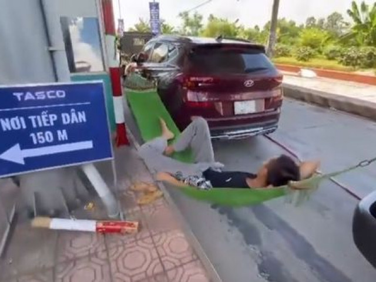

Thứ Sáu, ngày 19/08/2022 19:00 PM (GMT+7)
Không còn cảnh dồn ứ, ùn tắc sau khi Trạm BOT Quốc lộ 39B tạm dừng thu phí đối với phương tiện của người dân địa phương.
Sự kiện: Tin nóng
Hôm nay (19/8), theo ghi nhận của PV Báo Giao thông, tại Km 12+500 trên Quốc lộ 39B, không còn tình trạng hàng trăm người tập trung tại trạm BOT (thuộc địa bàn thị trấn Thanh Nê, huyện Kiến Xương, tỉnh Thái Bình) để phản đối việc áp dụng thu phí.
Người dân, chủ phương tiện tập trung phản đối khi trạm BOT Quốc lộ 39B tiến hành thu phí trở lại
Ông Nguyễn Mạnh Hùng (47 tuổi, trú tại thị trấn Tiền Hải), tài xế chở công nhân đi làm hàng ngày qua Trạm BOT Quốc lộ 39B cho biết, hiện đã không còn tình trạng thu phí như mấy ngày vừa qua. Xe mang biển số tỉnh Thái Bình hay biển số tỉnh ngoài, khi đi qua trạm chỉ cần đi thẳng và không dừng lại trước trạm thì barie gác chắn sẽ tự mở.
Theo ông Hùng, việc thu phí tại Trạm BOT Quốc lộ 39B đã trở về trạng thái bình thường như trước ngày 15/8. Tuy nhiên, người dân vẫn túc trực tại đây cho đến khi lãnh đạo tỉnh Thái Bình có câu trả lời rõ về trạm BOT này.

Các xe hiện đã lưu thông dễ dàng qua Trạm BOT Quốc lộ 39B
Trước đó, nhằm hoàn vốn cho dự án cải tạo, nâng cấp Quốc lộ 39B đoạn tuyến tránh Thanh Nê, tháng 8 vừa qua, Công ty CP Tasco Nam Thái (chủ đầu tư dự án tuyến tránh Thanh Nê) có văn bản thông báo đề nghị các doanh nghiệp, người dân thực hiện cập nhật và đăng ký thông tin tại văn phòng của UBND xã (hoặc Công an xã) trước ngày 10/8 để được miễn phí giá vé.
Nếu sau ngày 15/8, các xe không đăng ký hoặc không được cập nhật về thông tin thì sẽ không được áp dụng miễn phí giá vé.
Trước nội dung thông báo của Công ty CP Tasco, nhiều tài xế đã bức xúc và tập trung đông đúc tại BOT, yêu cầu BOT không được thu phí của các ô tô khi qua trạm.
Trao đổi với PV Báo Giao thông vào sáng nay, đại diện Công ty CP Tasco cho biết, lâu nay doanh nghiệp miễn phí cho các hộ dân lân cận, nhưng từ ngày 15/8 phải có xác nhận từ địa phương cư trú.
"Tuy nhiên, người dân không nghe và đã tập trung đông tại Trạm BOT Quốc lộ 39B, gây ùn tắc, mất an ninh trật tự. Vì vậy, để tạm thời giải quyết vấn đề thông thoáng giao thông trên tuyến, trước mắt sẽ không thu phí với các phương tiện có biển số của người địa phương", đại diện Công ty CP Tasco cho hay.
Được biết, ngày 18/8, UBND tỉnh Thái Bình tổ chức cuộc họp với các sở, ngành, địa phương liên quan và đại diện Công ty CP Tasco (chủ đầu tư), Công ty CP Tasco Nam Thái (đơn vị thu phí tại Trạm BOT Quốc lộ 39B) để nghe báo cáo và bàn giải pháp đảm bảo an ninh, trật tự tại trạm thu phí này. Sau họp bàn sẽ có kế hoạch cụ thể để đảm bảo hoạt động thu phí diễn ra đúng luật.
Nguồn: https://www.baogiaothong.vn/thai-binh-tram-bot-quoc-lo-39b-tam-dung-thu-phi-voi-nguoi-dan-dia-phuong-d563232.html
|  |
Tài xế mắc võng, dùng tiền âm phủ, mang vòng hoa tới đặt tại trạm thu phí BOT Ngày 17-8, tại trạm thu phí BOT 39 Kiến Xương (tỉnh Thái Bình) vẫn diễn ra tình trạng lộn xộn, ùn ứ. Nhiều tài xế vẫn nhất quyết không mua vé qua trạm vì cho rằng vị trí đặt... |
|---|
Theo Trần Kim (Báo Giao Thông)